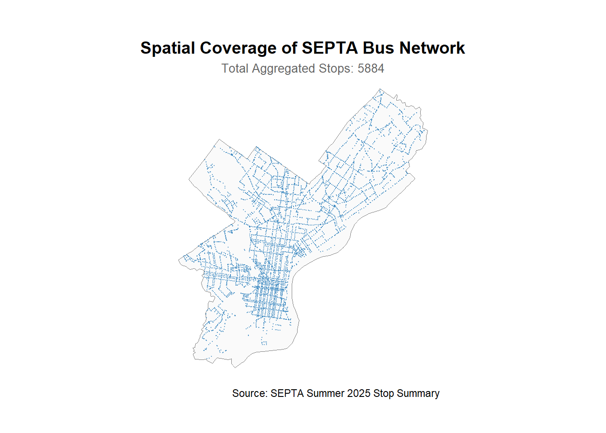
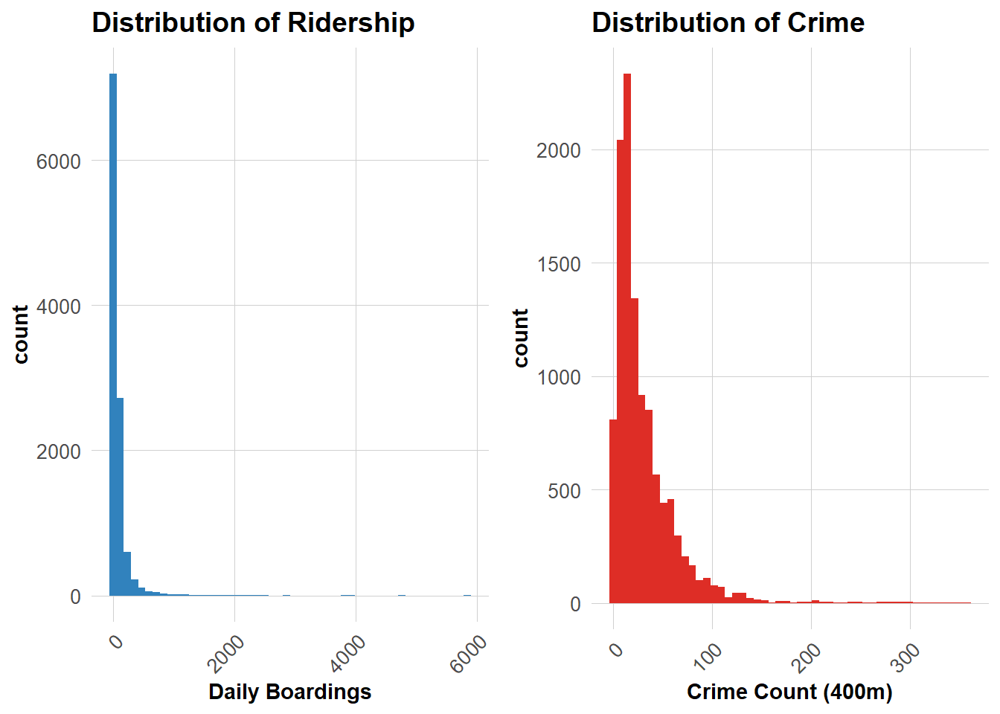
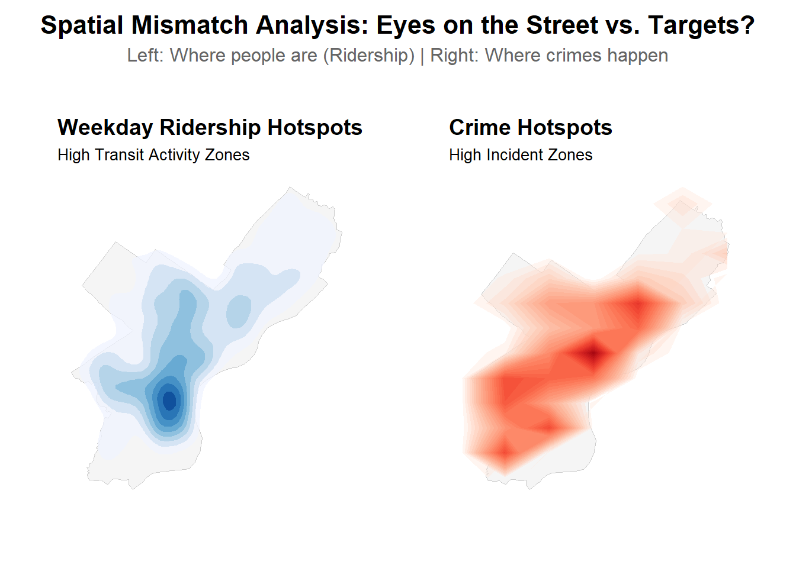
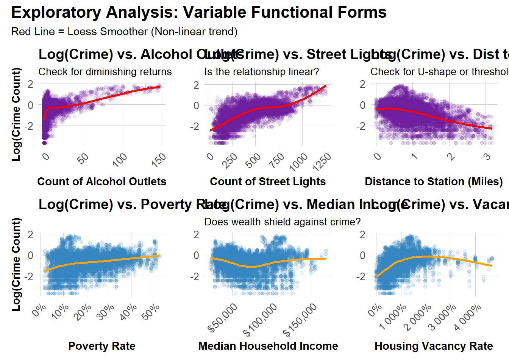
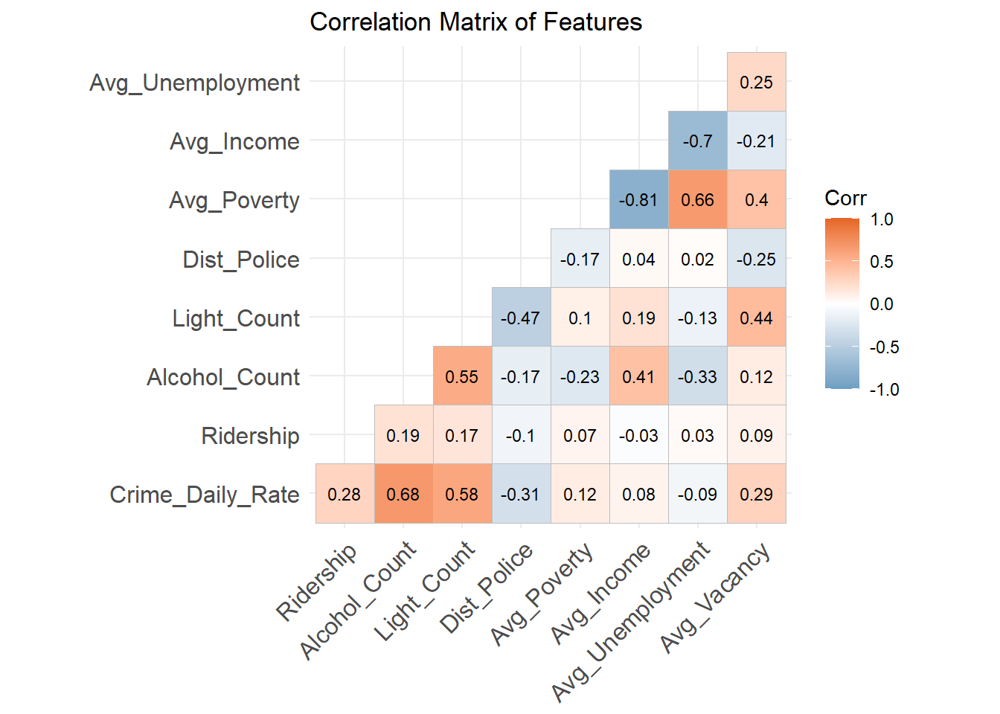
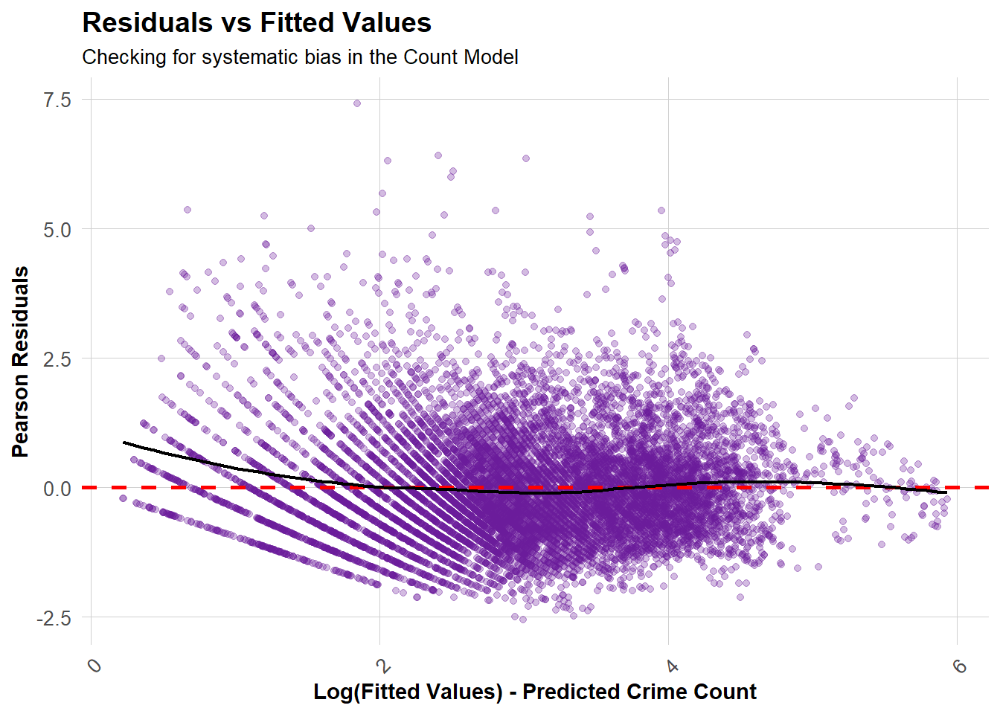

Safe Passage: Modeling Crime Risk around SEPTA Bus Stops
Author
Xinyuan Cui, Yuqing Yang, Jinyang Xu
Project Objective
This project investigates the complex relationship between transit ridership and public safety around SEPTA bus stops in Philadelphia. By employing Negative Binomial Regression, we explore the tension between two competing theories: whether high passenger volumes act as protective “Eyes on the Street” or attract crime as “Potential Targets.” The analysis integrates multi-source data—including ridership, crime incidents, census demographics, and built environment features—and utilizes interaction terms to reveal how risk dynamics shift between weekdays and weekends. Our ultimate goal is to transition SEPTA Transit Police from reactive to predictive deployment, providing a data-driven framework to identify high-risk anomalies and optimize patrol resources for maximum safety impact.
Phase 1: Data Preparation
The primary dataset we use is 2025summer Septa bus ridership data.The validity of any predictive model rests on the quality of its underlying data. In this initial phase, we focus strictly on data preparation and exploratory visualization. We load and clean the raw ridership, crime dataset and other datasets to handle missing values and outliers. Through initial descriptive analytics and visualization, we assess the statistical properties of our datasets.
# 1. Load Bus Databus_raw <-read_csv("data/Summer_2025_Stop_Summary_(Bus).csv")
1.1.2 Clean
Code
# 2. Get Philadelphia Boundaryphilly_boundary <-counties(state ="PA", cb =TRUE, class ="sf") %>%filter(NAME =="Philadelphia") %>%st_transform(2272)
In preparing the ridership data, we performed two critical structural transformations to align with our research goals.
First, we aggregated bidirectional stops sharing the same location (including opposite sides of a street) into single spatial units. This prevents spatial autocorrelation and ensures our 400m buffers capture a unique street environment.
Second, we restructured the dataset into a ‘long format’ (panel data), distinguishing between Weekday and Weekend ridership. This temporal split is vital, as it allows our model to capture the distinct behavioral patterns of both commuters and potential offenders during different times of the week.
Code
# 3. Process Ridership: Create Long Format (Aggregated + Weekday vs Weekend)bus_long <- bus_raw %>%filter(!is.na(Lat) &!is.na(Lon)) %>%mutate(Raw_Weekday = Weekdays_O + Weekdays_1,# A. Weekend average = (Sat total + Sun total) / 2Raw_Weekend = (Saturdays_ + Saturdays1 + Sundays_On + Sundays_Of) /2 ) %>%# B. Aggregation by Stop Namegroup_by(Stop) %>%summarise(# C. Add two direction ridershipRidership_Weekday =sum(Raw_Weekday, na.rm =TRUE),Ridership_Weekend =sum(Raw_Weekend, na.rm =TRUE),Lat =mean(Lat, na.rm =TRUE),Lon =mean(Lon, na.rm =TRUE),# Keep one Stop_Code as unique IDStop_Code =first(Stop_Code),.groups ="drop" ) %>%# D. Pivot to Long Formatpivot_longer(cols =c(Ridership_Weekday, Ridership_Weekend),names_to ="Time_Type",values_to ="Ridership" ) %>%# E. Create Dummy Variable & Clean upmutate(is_weekend =if_else(Time_Type =="Ridership_Weekend", 1, 0),Time_Category =if_else(is_weekend ==1, "Weekend", "Weekday") ) %>%# F. Convert to SF & Clipst_as_sf(coords =c("Lon", "Lat"), crs =4326) %>%st_transform(2272) %>%st_intersection(philly_boundary) %>% dplyr::select(Stop_Code, Stop, Ridership, is_weekend, Time_Category, geometry)# Check resultscat("Total Aggregated Stops (Unique Locations):", nrow(bus_long) /2, "\n")
ggplot() +# A. Base Layer: Philadelphia County Backgroundgeom_sf(data = philly_boundary, fill ="grey98", color ="grey50", size =0.5) +# B. Station Layer: Simple Pointsgeom_sf(data = bus_long %>%filter(is_weekend ==0), color ="#3182bd", # SEPTA Bluesize =0.1, # Small dots to avoid clutteralpha =0.6) +# Slight transparency# C. Stylinglabs(title ="Spatial Coverage of SEPTA Bus Network",subtitle =paste0("Total Aggregated Stops: ", nrow(bus_long) /2),caption ="Source: SEPTA Summer 2025 Stop Summary" ) +theme_void() +# Clean looktheme(plot.title =element_text(size =14, face ="bold", hjust =0.5),plot.subtitle =element_text(size =10, color ="grey40", hjust =0.5),plot.margin =margin(1, 1, 1, 1, "cm") )

The figure illustrates the extensive spatial coverage of the SEPTA bus network within Philadelphia. After aggregating bidirectional stops, our study includes 5,884 unique locations.
The distribution reveals a high density in the Center City and a grid-like arterial pattern extending into residential neighborhoods. This comprehensive coverage ensures that our analysis captures a diverse range of built environments, from dense commercial districts to suburban residential areas.
We excluded domestic disputes or indoor financial crimes because SEPTA Transit Police cannot police inside people’s homes. Instead, we selected these specific crime types because they occur in the public right-of-way and directly impact a rider’s decision to use public transit.
To isolate the true impact of transit ridership on crime, we must first account for the socio-economic context of the neighborhood. A bus stop in a distressed area faces different risks than one in a wealthy suburb.
By integrating 2023 ACS Census data, we control for structural disadvantages—such as poverty rates, unemployment, and housing vacancy.
We ingest data from OpenDataPhilly to capture the built environment’s impact on safety. This includes Alcohol Outlets (potential crime generators), Street Lights (natural surveillance/visibility) and Police Stations (formal guardianship/deterrence).
# B. Street Lights (Guardianship)lights_sf <-read_csv("data/Street_Poles.csv") %>%filter(!is.na(X) &!is.na(Y)) %>%st_as_sf(coords =c("X", "Y"), crs =3857) %>%st_transform(2272)
Proximity to police stations acts as a proxy for formal guardianship. We load these coordinates to later calculate the distance-based deterrence effect.
Phase 2 transforms our raw spatial data into analytical features. A bus stop is not just a point on a map; it is the center of a dynamic micro-environment. To capture this, we employ a 400-meter buffer approach—roughly equivalent to a 5-minute walk, defining the ‘catchment area’ for each station.
After that, we shift our focus to investigating the aggregate relationships between our independent variables (e.g., ridership, built environment) and the dependent variable (crime counts). This exploratory analysis allows us to observe baseline correlations and structural patterns, providing the necessary empirical support for our subsequent Negative Binomial modeling.
# 1. Calculate total count# Calculate crime_sf data set covers how many weekdays and weekendsday_counts <- crime_sf %>%st_drop_geometry() %>%group_by(is_crime_weekend) %>%summarise(n_days =n_distinct(crime_date)) print(day_counts)
We know that a dangerous corner doesn’t become safe overnight. To make our model fair, we must acknowledge that some stops have a history of trouble.
We calculated the crime counts for each stop from the previous season (Q1). We try to explain: ‘Given how dangerous this spot usually is, does adding more bus riders make it safer or worse?’
Alcohol outlets are established ‘crime generators.’ We load their locations to model areas with higher potential for intoxication-related conflicts.
Code
alcohol_agg <-st_join(bus_buffer, alcohol_sf, join = st_intersects) %>%group_by(Stop_Code, is_weekend) %>%summarise(Alcohol_Count =n() -1) %>%# Subtract 1 because st_join is left join (self-intersection NA check)st_drop_geometry()
2.1.4 Infrastructure Numbers
Street lighting is a key component of CPTED (Crime Prevention Through Environmental Design). We process the location of street poles to estimate visibility and natural surveillance levels.
To control for neighborhood context, we calculated the average:
- Avg_Poverty: Rate of economic deprivation.
- Avg_Income: Proxy for local wealth and resources.
- Avg_BA: Educational attainment.
- Avg_Unemployment: Measure of labor market instability.
- Avg_Vacancy: Indicator of physical disorder.
3.1 Distribution of Crime and Bus Stop Ridership (histogram)
Does ridership follow a normal distribution? No. That’s why we need Negative Binomial.
Code
library(gridExtra)p1 <-ggplot(final_data, aes(x = Ridership)) +geom_histogram(fill ="#3182bd", bins =50) +labs(title ="Distribution of Ridership", x ="Daily Boardings") + plotThemep2 <-ggplot(final_data, aes(x = Crime_Total_Count)) +geom_histogram(fill ="#de2d26", bins =50) +labs(title ="Distribution of Crime", x ="Crime Count (400m)") + plotThemegrid.arrange(p1, p2, ncol =2)

The histograms reveal that both Ridership (Left) and Crime Counts (Right) follow a highly right-skewed, ‘long-tail’ distribution, rather than a normal bell curve. This extreme skewness mathematically confirm that a standard OLS Linear Regression would be biased.
This visual evidence creates a compelling mandate for using Negative Binomial Regression, which is specifically designed to handle such skewed count data.
While many bus stops have zero incidents, a few ‘hotspots’ have very high counts. This causes the variance to be much larger than the mean. To address this overdispersion，which violates the core assumption of Poisson regression， we employed a Negative Binomial model. This approach allows us to model the data more accurately without inflating the significance of our findings.
3.2 Spatial distribution of crime and Bus Stop Ridership(map)
Code
# 1. Extract Coordinates# A. Bus Stop databus_plot_data <- bus_long %>%filter(is_weekend ==0) %>%mutate(X =st_coordinates(geometry)[,1],Y =st_coordinates(geometry)[,2] ) %>%st_drop_geometry() # B. Crime datacrime_plot_data <- crime_sf %>%mutate(X =st_coordinates(geometry)[,1],Y =st_coordinates(geometry)[,2] ) %>%st_drop_geometry()# 2. Create Maps# Left: Ridership Densityp_ridership <-ggplot() +geom_sf(data = philly_boundary, fill ="#f5f5f5", color ="grey80") +stat_density_2d(data = bus_plot_data, aes(x = X, y = Y, fill = ..level.., weight = Ridership), geom ="polygon", alpha =0.75 ) +scale_fill_distiller(palette ="Blues", direction =1, guide ="none") +labs(title ="Weekday Ridership Hotspots", subtitle ="High Transit Activity Zones" ) + mapTheme# Right：Crime Densityp_crime_map <-ggplot() +geom_sf(data = philly_boundary, fill ="#f5f5f5", color ="grey80") +stat_density_2d(data = crime_plot_data, aes(x = X, y = Y, fill = ..level..), geom ="polygon", alpha =0.4, bins =30, adjust =0.5 ) +scale_fill_distiller(palette ="Reds", direction =1, guide ="none") +labs(title ="Crime Hotspots", subtitle ="High Incident Zones" ) + mapTheme# 3. Combine Side-by-Sidecombined_map <- p_ridership + p_crime_map +plot_annotation(title ="Spatial Mismatch Analysis: Eyes on the Street vs. Targets?",subtitle ="Left: Where people are (Ridership) | Right: Where crimes happen",theme =theme(plot.title =element_text(size =16, face ="bold", hjust =0.5),plot.subtitle =element_text(size =12, color ="grey40", hjust =0.5) ) )combined_map

Transit activity is anchored in Center City and radiates outward along the major arterials (Broad St.and Market St.). However, crime exhibits a polycentric distribution. Beyond the city center, we observe significant high-crime clusters in North and West Philadelphia (Kensington/Allegheny).
This spatial mismatch suggests that ridership volume alone cannot explain crime risk. While the downtown core attracts crime due to sheer foot traffic (‘Targets’), the peripheral hotspots are likely driven by other environmental factors—such as socioeconomic disadvantage or the presence of crime generators (e.g., alcohol outlets)—rather than transit volume alone.
3.3 Crime vs. Bus Stop Ridership (scatter plots)
Code
bar_plot_data <- final_data %>%st_drop_geometry() %>%group_by(is_weekend_factor) %>%summarise(Avg_Ridership =mean(Ridership, na.rm =TRUE), Avg_Crime_count =mean(Crime_Daily_Rate, na.rm =TRUE) ) %>%# Longpivot_longer(cols =c(Avg_Ridership, Avg_Crime_count),names_to ="Metric",values_to ="Value" ) %>%mutate(Metric_Label =case_when( Metric =="Avg_Ridership"~"Average Ridership", Metric =="Avg_Crime_count"~"Average Crime Count" ) )ggplot(bar_plot_data, aes(x = is_weekend_factor, y = Value, fill = is_weekend_factor)) +geom_col(width =0.6, alpha =0.9) +facet_wrap(~Metric_Label, scales ="free_y") +scale_fill_manual(values =c("Weekday"="#3182bd", "Weekend"="#de2d26")) +labs(title ="Volume vs. Risk: Weekday vs. Weekend",subtitle ="Comparison of Average Ridership and Crime per Stop",x ="", y ="Average Count",fill ="Time Period" ) +theme_minimal() +theme(plot.title =element_text(size =14, face ="bold", hjust =0.5),plot.subtitle =element_text(size =10, color ="grey40", hjust =0.5),strip.text =element_text(size =12, face ="bold"), axis.text.x =element_text(size =11, face ="bold"),legend.position ="none"# )
Code
# Crime vs. Ridership (Interaction Plot)ggplot(final_data, aes(x = Log_Ridership, y = Crime_Daily_Rate, color = is_weekend_factor)) +geom_point(alpha =0.1, size =1) +geom_smooth(method ="glm", method.args =list(family ="quasipoisson"), se =TRUE) +scale_color_manual(values =c("Weekday"="#3182bd", "Weekend"="#de2d26")) +labs(title ="Does Ridership impact Crime differently on Weekends?",subtitle ="Interaction Effect (Normalized by Number of Days)",x ="Log(Daily Ridership)",y ="Average Daily Crime Count (per 400m)", color ="Time Period" ) + plotTheme
Crime Follows the Crowd (Bar Chart):
The left bar charts show that crime volume drops significantly on weekends, mirroring the drop in ridership shown in the right chart. This confirms that crime is likely driven by opportunity—fewer people on the street simply means fewer targets and fewer conflicts.
The Risk “Conversion Rate” is Constant (Scatter Plot):
The interaction plot reveals a consistent positive correlation between ridership and crime counts across both weekdays and weekends. While the slopes exhibit only minor differences, the methodological value of this split is significant. By comparing the same bus stops during different time periods (Weekday vs. Weekend), we inherently control for static environmental factors, such as poverty rates, street lighting, and proximity to alcohol outlets, which remain constant regardless of the day.
Consequently, this acts as a quasi-experimental control: since the physical environment is fixed, the persistent upward trend suggests that ridership itself is a direct driver of crime risk. This supports the ‘Targets’ hypothesis over the ‘Eyes on the Street’ theory, indicating that higher passenger volumes attract opportunistic crime regardless of the temporal context.
3.4 Crime vs. Spatial & Social features (scatter plots)
Code
library(patchwork)library(scales)plot_data <- final_data %>%mutate(log_crime =log(Crime_Daily_Rate +0.01), # +0.01 to avoid log(0)log_income =log(Avg_Income +1) )# --- 1. POI & Infrastructure (Built Environment) ---# A. Alcohol Outletsp1 <-ggplot(plot_data, aes(x = Alcohol_Count, y = log_crime)) +geom_point(alpha =0.1, color ="#6A1B9A") +geom_smooth(method ="loess", color ="red", se =FALSE) +labs(title ="Log(Crime) vs. Alcohol Outlets",subtitle ="Check for diminishing returns",x ="Count of Alcohol Outlets", y ="Log(Crime Count)") + plotTheme# B. Street Lightsp2 <-ggplot(plot_data, aes(x = Light_Count, y = log_crime)) +geom_point(alpha =0.1, color ="#6A1B9A") +geom_smooth(method ="loess", color ="red", se =FALSE) +labs(title ="Log(Crime) vs. Street Lights",subtitle ="Is the relationship linear?",x ="Count of Street Lights", y ="") + plotTheme# C. Distance to Policep3 <-ggplot(plot_data, aes(x = Dist_Police, y = log_crime)) +geom_point(alpha =0.1, color ="#6A1B9A") +geom_smooth(method ="loess", color ="red", se =FALSE) +labs(title ="Log(Crime) vs. Dist to Police",subtitle ="Check for U-shape or threshold",x ="Distance to Station (Miles)", y ="") + plotTheme# --- 2. Demographics (Census) ---# D. Poverty Rate p4 <-ggplot(plot_data, aes(x = Avg_Poverty, y = log_crime)) +geom_point(alpha =0.1, color ="#3182bd") +geom_smooth(method ="loess", color ="orange", se =FALSE) +scale_x_continuous(labels = scales::percent) +labs(title ="Log(Crime) vs. Poverty Rate",x ="Poverty Rate", y ="Log(Crime Count)") + plotTheme# E. Median Incomep5 <-ggplot(plot_data, aes(x = Avg_Income, y = log_crime)) +geom_point(alpha =0.1, color ="#3182bd") +geom_smooth(method ="loess", color ="orange", se =FALSE) +scale_x_continuous(labels = scales::dollar) +labs(title ="Log(Crime) vs. Median Income",subtitle ="Does wealth shield against crime?",x ="Median Household Income", y ="") + plotTheme# F. Vacancy Ratep6 <-ggplot(plot_data, aes(x = Avg_Vacancy, y = log_crime)) +geom_point(alpha =0.1, color ="#3182bd") +geom_smooth(method ="loess", color ="orange", se =FALSE) +scale_x_continuous(labels = scales::percent) +labs(title ="Log(Crime) vs. Vacancy Rate",x ="Housing Vacancy Rate", y ="") + plotTheme# --- Combine Plots ---(p1 | p2 | p3) / (p4 | p5 | p6) +plot_annotation(title ="Exploratory Analysis: Variable Functional Forms",subtitle ="Red Line = Loess Smoother (Non-linear trend)",theme =theme(plot.title =element_text(size =16, face ="bold")) )

Before finalizing our model, we conducted an extensive exploratory analysis, testing relationships across multiple potential independent variables and their non-linear transformations. While we only present the variables with the most significant statistical relationships and policy implications here, this rigorous process of trial and error was essential to ensure the robustness of our final model. The charts above represent the distilled ‘risk signals’ identified from this comprehensive screening.
Alcohol Outlets: The plot shows that crime goes up quickly with the first few alcohol stores. However, as the number of stores gets very high, the line flattens out (Diminishing marginal returns). We will try using a log transformation for this feature. This tells the model that the first few stores have a bigger impact than the later ones.
Street Lights: The red trend line is not straight. It goes up as lights increase (usually in busy areas), but then it curves. In later this study, we used a polynomial (2nd degree) term. This allows the model to draw a curved line instead of a straight one to fit the data better.
Distance to Police: The line looks mostly straight and goes down slightly, so we kept this variable linear.
Poverty Rate: As poverty goes up, crime generally goes up. The line is mostly straight. We also kept it as a standard linear variable.
Median Income: The line looks a bit like a “U” shape. Crime is high in low-income areas, drops in middle-income areas, and rises slightly or stays flat in higher-income areas. We added a squared term (^2). This helps the model understand that crime can be high at both low and high income levels, but low in the middle.
Vacancy Rate: The line looks like an upside-down “U”. Crime goes up as vacancy increases, but when vacancy gets very high (empty neighborhoods), crime actually drops. We also added a squared term (^2) for this.
3.5 Correlation Matrix of Features for all Features
Code
library(ggcorrplot)numeric_vars <- final_data %>%st_drop_geometry() %>% dplyr::select( Crime_Daily_Rate, Ridership, Alcohol_Count, Light_Count, Dist_Police, Avg_Poverty, Avg_Income, Avg_Unemployment, Avg_Vacancy )corr_matrix <-cor(numeric_vars, use ="complete.obs")ggcorrplot( corr_matrix, method ="square", type ="lower", lab =TRUE, lab_size =3, colors =c("#6D9EC1", "white", "#E46726"), title ="Correlation Matrix of Features",ggtheme =theme_minimal())

The correlation matrix reveals a critical issue of multicollinearity among the socioeconomic predictors. Specifically, Average Poverty Rate (Avg_Poverty) and Median Household Income (Avg_Income) exhibit a strong negative correlation of -0.81. Additionally, Unemployment Rate (Avg_Unemployment) shows a strong negative correlation with Income (-0.70) and a moderately high positive correlation with Poverty (0.66).
These high coefficients suggest that Poverty, Income, and Unemployment are capturing overlapping dimensions of neighborhood socioeconomic status. While this flags a risk of multicollinearity, correlation coefficients alone are insufficient for removing variables. Therefore, we will proceed to calculate the Variance Inflation Factor (VIF) in the next step to rigorously quantify the severity of multicollinearity and determine the appropriate strategy for feature selection or transformation.
3.6 Crime distribution in weekdays and weekends
Code
ggplot(final_data, aes(x = is_weekend_factor, y = Crime_Daily_Rate, fill = is_weekend_factor)) +geom_boxplot(alpha =0.7, outlier.shape =NA) +stat_summary(fun = mean, geom ="point", shape =23, size =3, fill ="white") +coord_cartesian(ylim =c(0, quantile(final_data$Crime_Daily_Rate, 0.95))) +scale_fill_manual(values =c("Weekday"="#3182bd", "Weekend"="#de2d26")) +labs(title ="Daily Crime Risk: Weekday vs. Weekend",subtitle ="Comparison of Average Daily Crime Counts per Stop",x ="Time Period",y ="Average Daily Crime Count (per 400m)", caption ="Note: Values represent daily averages to account for fewer weekend days per year." ) + plotTheme
Stability of Crime Volume: The means (indicated by white diamonds) and medians (solid black lines) for both weekdays and weekends are nearly identical, appearing at approximately the same daily average level (~0.6 incidents). This pattern suggests that the aggregate demand for public safety resources at these bus stops does not fluctuate significantly throughout the week.
Justification for Pseudo-Panel Modeling： While this chart shows crime counts are constant, we know that generally ridership volume typically drops on weekends. If the outcome (crime) remains the same while the input (ridership) decreases, it implies that the risk intensity per rider is likely higher on weekends. Constructing a pseudo-panel allows us to mathematically capture this changing elasticity, rather than averaging it out.
By disaggregating the data into weekday and weekend observations for each stop, we create a pseudo-panel structure that acts as a natural control. Since the physical environment (lighting, poverty, location) remains fixed for a specific stop, splitting the data allows our model to isolate ridership as the primary changing variable, thereby enabling a more robust causal inference about how passenger flows specifically impact crime rates under different density conditions.
Phase 4: Model Building
4.1 Ridership only:
Code
model_1 <-glm.nb(Crime_Total_Count ~ Log_Ridership +offset(log(Exposure_Days)), data = final_data)summary(model_1)
Call:
glm.nb(formula = Crime_Total_Count ~ Log_Ridership + offset(log(Exposure_Days)),
data = final_data, init.theta = 1.962937689, link = log)
Coefficients:
Estimate Std. Error z value Pr(>|z|)
(Intercept) -1.328484 0.018925 -70.20 <2e-16 ***
Log_Ridership 0.243197 0.004944 49.19 <2e-16 ***
---
Signif. codes: 0 '***' 0.001 '**' 0.01 '*' 0.05 '.' 0.1 ' ' 1
(Dispersion parameter for Negative Binomial(1.9629) family taken to be 1)
Null deviance: 14335 on 11065 degrees of freedom
Residual deviance: 11852 on 11064 degrees of freedom
AIC: 92538
Number of Fisher Scoring iterations: 1
Theta: 1.9629
Std. Err.: 0.0274
2 x log-likelihood: -92531.6570
This baseline model establishes the fundamental relationship between transit ridership and crime counts without any confounding factors. It serves as a benchmark to test the raw association. specifically, whether higher passenger volume acts as a “crime generator” (providing more potential targets) or a deterrent (providing “eyes on the street”). The offset term ensures we are modeling the rate of crime per day, accounting for differences in exposure periods.
Call:
glm.nb(formula = Crime_Total_Count ~ Log_Ridership * is_weekend_factor +
offset(log(Exposure_Days)), data = final_data, init.theta = 1.968491375,
link = log)
Coefficients:
Estimate Std. Error z value Pr(>|z|)
(Intercept) -1.434242 0.027417 -52.311 < 2e-16
Log_Ridership 0.263192 0.006798 38.716 < 2e-16
is_weekend_factorWeekend 0.186359 0.038085 4.893 9.92e-07
Log_Ridership:is_weekend_factorWeekend -0.034408 0.010040 -3.427 0.00061
(Intercept) ***
Log_Ridership ***
is_weekend_factorWeekend ***
Log_Ridership:is_weekend_factorWeekend ***
---
Signif. codes: 0 '***' 0.001 '**' 0.01 '*' 0.05 '.' 0.1 ' ' 1
(Dispersion parameter for Negative Binomial(1.9685) family taken to be 1)
Null deviance: 14371 on 11065 degrees of freedom
Residual deviance: 11849 on 11062 degrees of freedom
AIC: 92509
Number of Fisher Scoring iterations: 1
Theta: 1.9685
Std. Err.: 0.0275
2 x log-likelihood: -92498.9340
In this step, we introduce the interaction term (Log_Ridership * is_weekend_factor) to test our core hypothesis: does the impact of ridership on crime change fundamentally during weekends? This specification allows the model to differentiate the “commuter effect” from potentially riskier weekend dynamics. It helps us determine if a specific bus stop becomes more dangerous per rider on weekends, even if the total volume of passengers decreases.
We incorporate criminogenic generators (alcohol outlets), potential guardians (street lights), and socioeconomic indicators (income, vacancy, and poverty).
By adjusting for these factors, this model rigorously tests whether ridership has a unique impact on crime, or if high-ridership stops simply happen to be located in disadvantaged or commercially dense neighborhoods. This step is crucial for isolating the specific effect of the transit network from broader environmental conditions.
In this robust specification, we introduce Police Service Area (PSA) fixed effects to control for unobserved spatial heterogeneity. Unlike census tracts, PSAs are directly relevant to law enforcement strategy, allowing the model to account for differences in patrolling intensity and reporting practices across different police districts. This approach not only improves model fit but also resolves potential overfitting issues associated with smaller spatial units.
The last model incorporates a temporal lag (Log_Crime_Rate_lag), accounting for the historical “stickiness” of crime hotspots. By controlling for past crime alongside spatial fixed effects, this model offers the most rigorous test, correcting for both spatial dependence and serial correlation.
A diagnostic check for multicollinearity in Model 5 revealed significant redundancy among the socioeconomic variables. Specifically, Median Income (Avg_Income) exhibited an extremely high Generalized VIF score of 9.92, indicating strong collinearity with Poverty Rate (Avg_Poverty). Including both variables introduces noise and destabilizes coefficient estimates, as they essentially measure the same underlying concept of economic disadvantage.
Consequently, in the transition to Model 6 (Refined Model), we removed Avg_Income and its quadratic term, retaining Avg_Poverty as the primary proxy for socioeconomic status due to its stronger theoretical link to crime risk in urban literature. Additionally, we simplified the Street Lights variable from a polynomial to a linear term (Light_Count). Given that the model includes robust spatial fixed effects (PSA_ID), the complex non-linear variation is already largely absorbed by the spatial controls, making a linear specification for infrastructure more parsimonious and interpretable.
After removing the conflicting income variables, Model 6 is now statistically healthy. Most importantly, our core variable, Log_Ridership, has a very low GVIF score of 2.13. This is well below the concern threshold (usually 5 or 10), which proves that our main finding that ridership drives crime, is reliable and not distorted by other factors.
High scores for Vacancy and the Interaction term are mathematically expected when we use squared terms (like Vacancy^2) or interactions. They do not negatively affect the model’s ability to predict crime.
4.7 Model Comparison Plot
Code
library(modelsummary)library(ggplot2)library(dplyr)# 1. Modify Coef Mapcoef_map_refined <-c("Log_Ridership"="Ridership (Log)","is_weekend_factorWeekend"="Weekend Effect","Log_Ridership:is_weekend_factorWeekend"="Interaction: Ridership × Weekend","is_weekend_factorWeekend:Log_Ridership"="Interaction: Ridership × Weekend", "log(Alcohol_Count + 1)"="Alcohol Outlets", "Light_Count"="Street Lights (Linear)", "Avg_Poverty"="Poverty Rate", "Avg_Vacancy"="Vacancy Rate","I(Avg_Vacancy^2)"="Vacancy Rate (Sq)","Avg_Unemployment"="Unemployment Rate","Dist_Police"="Dist to Police Station","log(Crime_Daily_Rate_lag + 0.001)"="Temporal Lag (Prev. Q)")# 2. Mappingp_comparison <-modelplot(list("M1: Ridership"= model_1, "M2: +Interact"= model_2,"M3: +Env/Demo"= model_3,"M4: +PSA Fixed"= model_4, "M5: +Lag"= model_5,"M6: Final"= model_6 ),coef_map = coef_map_refined, coef_omit ="Intercept", conf_level =0.95,size =0.8) +geom_vline(xintercept =0, color ="red", linetype ="dashed") +labs(title ="Model Evolution: Stability of Key Drivers",subtitle ="Comparing coefficients across model iterations (M1-M6)",x ="Effect Size (Coefficient Estimate)",y ="",caption ="Note: To facilitate direct comparison, this plot displays only the variables selected for the Final Refined Model (M6)." ) +theme_minimal() +scale_color_brewer(palette ="Dark2") +theme(legend.position ="bottom",plot.title =element_text(face ="bold", size =14),axis.text.y =element_text(size =10, face ="bold", color ="black"),panel.grid.minor =element_blank() )p_comparison
This plot visualizes our journey from a naive baseline to a robust final model. When reading this chart:
Distance from Red Line: The further the dot is to the right, the stronger the positive impact on crime.
Length of the Line: This represents the Confidence Interval. A longer line means higher uncertainty, often caused by multicollinearity.
Model 1(Ridership Only): Without controlling for any other factors, ridership appears to be a massive driver of crime. However, this estimate is likely inflated (biased) because high-ridership stops are often located in dense, low-income areas. The model is mistakenly attributing the neighborhood effect solely to ridership.
Model 2(+Interaction): We introduce the Weekend Effect and the interaction term. The main Ridership coefficient increases slightly. This confirms that the relationship isn’t identical across the week. By separating weekends, we begin to see that the “baseline risk” shifts, validating the need for a pseudo-panel approach, though the core finding (ridership = risk) remains consistent due to its positive coefficient.
Model 3(+Env & Demo): A dramatic shift occurs. The Poverty Rate coefficient appears and is extremely high (purple dot far to the right), while the Ridership coefficient drops significantly (moving left). This is the “Reality Check.” Once we account for poverty, we realize that socioeconomic status is the primary driver of crime, not just the bus stop itself. Ridership is still a significant risk factor (the coefficient is still positive), but its impact is much smaller than Model 1 suggested.
Model 4(+PSA Fixed Effects): The Poverty Rate coefficient shrinks (moves left, pink dot) compared to Model 3. By adding PSA (Police Service Area) fixed effects, we control for unobserved neighborhood characteristics (like local culture or police presence). The model no longer relies solely on “Poverty” to explain crime clusters, making the estimates for specific variables like Alcohol Outlets and Ridership more precise and trustworthy.
Model 5(+Lag): The Temporal Lag variable appears at the top with a very high positive coefficient. The strongest predictor of future crime is past crime. Adding this variable absorbs a huge amount of variance, creating a very strict test for our other variables.
Model 6(Final Refined):Ridership remains positive and significant (approx 0.1), proving that even after controlling for everything (poverty, history, location), more passengers still equal more targets. Alcohol shows a stable positive link. Dist to Police shows a negative coefficient (meaning crime is higher closer to stations), but this is probably because there are bias in original dataset where crimes nearby the police stations are more likely to be recorded.
This plot also visualizes our journey from a naive baseline to a robust final model.
Overall, as more contextual and more spatial information are added, the predicted values align more closely with the 45° reference line, indicating improved model fit.
Models 1–2 rely mainly on ridership and weekend interaction, resulting in wide dispersion and systematic under-prediction at higher crime levels.
Models 3–4 incorporate environmental (alcohol outlets, lighting) and demographic features, producing a noticeably tighter prediction band and capturing more variation across stops.
Model 5 adds temporal information (lagged crime rate), which further stabilizes predictions and reduces bias.
Compared with Model 5, Model 6 trims several weak or redundant predictors while keeping the key effects. This parsimonious specification makes the model more stable and interpretable and helps reduce potential multicollinearity among highly correlated socioeconomic variables.
These findings are validated through 5-fold cross-validation, which evaluates each model on unseen data rather than relying solely on in-sample fit. The consistent reduction in MAE and RMSE across folds confirms that the improvements are not artifacts of overfitting but reflect real gains in out-of-sample predictive performance.
Model 1(Ridership Only)
The model using only ridership intensity establishes a basic relationship between human activity levels and crime, but its predictive capacity is limited. Ridership alone captures general exposure but cannot explain spatial heterogeneity across stops.
Model 2(+ Interaction)
Adding the weekday–weekend interaction improves the model slightly.
Model 3(+ Environment&Demographic)
Alcohol outlet density, Lighting conditions poverty, income, vacancy, and unemployment: these variables substantially reduce prediction error, indicating that crime near transit stops is strongly shaped by both environmental risk factors and neighborhood disadvantage.
Model 4(+Spatial Fixed)
Introducing police station distance and especially PSA fixed effects further improves performance.
This suggests that:Crime patterns are partly structured by local policing jurisdictions and there are unobserved spatial factors (culture, enforcement style, land use patterns) that are constant within each PSA.PSA fixed effects absorb these stable spatial characteristics, making the model more robust.
Model 5(Temporal Lag)
Including lagged crime rate (previous quarter) yields the largest single improvement. Lagged crime captures temporal persistence—areas that experienced more crime in the past tend to remain active in the present.This is a very strong and stable predictor, dramatically improving accuracy.
Model 6(Refined)
Model 6 streamlines the specification by removing weaker or collinear variables.Despite using fewer predictors, its accuracy remains nearly identical to Model 5.
This indicates that a refined, parsimonious model with reduced multicollinearity can maintain strong predictive performance while improving interpretability and stability.
Phase 6: Model Diagnostics
Check assumptions for best model:
6.1 Spatial Autocorrelation of Residuals (Moran’s I)
Code
best_model <- model_6final_data$resid_pearson <-residuals(best_model, type ="pearson")final_data$resid_deviance <-residuals(best_model, type ="deviance")# Spatial Weights Matrixcoords <-st_coordinates(final_data)neighbor_nb <-knn2nb(knearneigh(coords, k =8))spatial_weights <-nb2listw(neighbor_nb, style ="W")# Moran's I testmoran_result <-moran.test(final_data$resid_pearson, spatial_weights)print(moran_result)
Moran I test under randomisation
data: final_data$resid_pearson
weights: spatial_weights
Moran I statistic standard deviate = 100.73, p-value < 2.2e-16
alternative hypothesis: greater
sample estimates:
Moran I statistic Expectation Variance
4.518144e-01 -9.037506e-05 2.012726e-05
Although we added spatial fixed effect(which is also a way to reduce spatial autocorrelation), the Moran’s I test on the model residuals shows a strong and highly significant level of spatial autocorrelation (Moran’s I = 0.452, p < 2.2 × 10⁻¹⁶).
This indicates that the residuals are not randomly distributed across space and that the model likely fails to capture important spatial dependence structures in the data.
In practical terms, nearby transit stops tend to have systematically similar over or under predictions, suggesting the presence of spatially clustered unobserved factors such as local policing practices, neighborhood context, or land-use patterns that are not fully absorbed even after including PSA fixed effects and temporal lag terms.
Given the strength of the residual spatial autocorrelation, the results imply that the model could benefit from incorporating explicit spatial components, such as:
spatially lagged variables (SAR, CAR, or SLX terms)
spatial random effects
geographically weighted or spatially varying coefficient structures
Overall, the Moran’s I result shows that while the model fits well in non-spatial dimensions, unmodeled spatial processes remain significant and should be considered in future extensions.
6.2 Spatial Distribution of Residuals
Code
# Spatial Distribution of Residualsfinal_data$spatial_resid <-residuals(best_model, type ="deviance")ggplot() +geom_sf(data = philly_boundary, fill ="grey95", color =NA) +geom_sf(data = final_data, aes(color = spatial_resid), size =0.8, alpha =0.7) +scale_color_gradient2(low ="blue", mid ="grey90", high ="red",midpoint =0,name ="Deviance\nResidual",limits =c(-3, 3), oob = scales::squish ) +labs(title ="Map of Model Residuals",subtitle ="Red = Unexpectedly High Crime (Under-predicted)\nBlue = Unexpectedly Low Crime (Over-predicted)" ) + mapTheme
Red spots (positive deviance residuals):These locations experienced more crime than the model expected.
Blue spots (negative deviance residuals):These locations show less crime than predicted.
Although the residuals exhibit noticeable spatial clustering, which was confirmed by the significant Moran’s I test, the pattern does not form a clear, interpretable spatial structure.
The clusters of over and under prediction appear scattered across different parts of the city without aligning with obvious geographic boundaries, transit corridors, or neighborhood divisions.
This suggests that while some localized spatial dependence remains in the model, these patterns do not translate into a single coherent spatial process.
In other words, the remaining spatial signal is weakly structured and heterogeneous, making it difficult to summarize into a simple spatial rule or trend.
6.3 Residual plot
Code
best_model <- model_6model_data <-data.frame(Fitted =fitted(best_model),Residuals =residuals(best_model, type ="pearson"))p_resid_fitted <-ggplot(model_data, aes(x =log(Fitted), y = Residuals)) +geom_point(alpha =0.3, color ="#6A1B9A", size =1.5) +geom_hline(yintercept =0, linetype ="dashed", color ="red", linewidth =1) +geom_smooth(method ="loess", color ="black", se =FALSE, linewidth =0.8) +labs(title ="Residuals vs Fitted Values",subtitle ="Checking for systematic bias in the Count Model",x ="Log(Fitted Values) - Predicted Crime Count",y ="Pearson Residuals" ) + plotThemep_resid_fitted

This plot shows the residuals against the predicted crime counts from the final negative binomial model. Overall, the residuals are centered around zero without clear curvature or funnel shapes, suggesting that the model does not suffer from major misspecification or heteroskedasticity.
The “striped” patterns come from the integer nature of crime counts which is an effect commonly called the discreteness pattern in count models. This is not a model problem; it simply reflects that many stations share the same small crime counts , leading to stacked fitted values. The smooth LOESS line stays close to zero across the range, indicating no strong systematic bias.
In short, the residual plot shows that the negative binomial model is behaving as expected for count data, and there is no major evidence of nonlinearity or missing predictors.
The Q–Q plot shows that the Pearson residuals follow the theoretical quantiles closely in the middle range, meaning the model captures the main distribution of crime counts well. The deviation at the upper tail indicates a few unusually high-crime stops that the model cannot fully explain—this is common in count data, especially when rare but extreme events occur.
Negative Binomial models are designed to handle overdispersion, and the relatively small tail deviation suggests that any remaining overdispersion is limited to a small number of extreme observations rather than a systematic model failure.
Overall, the Q–Q plot supports that the model fits the bulk of the data well, with only mild deviations at the extremes. Binomial assumption might still be struggling with extreme overdispersion.
Phase 7: Conclusions
7.1 The Verdict: “Targets” Outweigh “Eyes on the Street”
Code
library(dplyr)library(ggplot2)library(knitr)library(kableExtra)model_final <- model_6 coef_name_base <-"Log_Ridership"coef_name_interact <-"Log_Ridership:is_weekend_factorWeekend"beta_base <-coef(model_final)[coef_name_base] beta_interact <-coef(model_final)[coef_name_interact]vcov_matrix <-vcov(model_final) # Calculate real slope in weekends and weekdays# A. Weekday: Baseslope_weekday <- beta_basese_weekday <-sqrt(vcov_matrix[coef_name_base, coef_name_base])p_weekday <-2* (1-pnorm(abs(slope_weekday / se_weekday)))# B. Weekend: Base + Interactionslope_weekend <- beta_base + beta_interact# Calculate Var: Var(A+B) = Var(A) + Var(B) + 2*Cov(A,B)var_weekend <- vcov_matrix[coef_name_base, coef_name_base] + vcov_matrix[coef_name_interact, coef_name_interact] +2* vcov_matrix[coef_name_base, coef_name_interact]se_weekend <-sqrt(var_weekend)p_weekend <-2* (1-pnorm(abs(slope_weekend / se_weekend)))hypothesis_test <-data.frame(Scenario =c("Weekday (Commuters)", "Weekend (Non-Routine)"),Impact_Slope =c(slope_weekday, slope_weekend),Std_Error =c(se_weekday, se_weekend),P_Value =c(p_weekday, p_weekend)) %>%mutate(Interpretation =case_when( Impact_Slope >0& P_Value <0.05~"Positive & Significant (Target Hypothesis Supported)", Impact_Slope <0& P_Value <0.05~"Negative & Significant (Eyes on Street Supported)",TRUE~"Not Significant" ),Impact_Slope =round(Impact_Slope, 3),Std_Error =round(Std_Error, 3),P_Value =ifelse(P_Value <0.001, "< 0.001", round(P_Value, 3)) )kbl(hypothesis_test, caption ="The Verdict: Does Ridership Drive Crime in Both Contexts?") %>%kable_styling(bootstrap_options =c("striped", "hover"), full_width = F) %>%row_spec(1:2, bold =TRUE, color ="black", background ="#e6f5ff") %>%footnote(general ="Slopes > 0 indicate that higher ridership is associated with higher crime counts.")
The Verdict: Does Ridership Drive Crime in Both Contexts?
Slopes > 0 indicate that higher ridership is associated with higher crime counts.
Our analysis provides a definitive answer to the “Eyes on the Street” versus “Targets” debate within the context of SEPTA bus stops. As illustrated in our final verdict table, ridership exhibits a consistent, positive, and significant correlation with crime counts (\(p < 0.001\)). Specifically, we observed an impact slope of 0.031 for Weekdays (routine commuting) and 0.023 for Weekends (discretionary travel). Crucially, this relationship holds true even after controlling for neighborhood socioeconomic status. This suggests that in Philadelphia, high passenger volume acts primarily as an attractor for opportunistic crime (“Targets”) rather than a deterrent. Therefore, reliance on passive surveillance by crowds is insufficient; active security measures are required as ridership grows.
7.2 Operational Strategy: Precision Policing based on “Risk Anomalies”
Code
## 7.2.1 Top 50 Under-Policed stopsfinal_data <- final_data %>%mutate(Predicted_Crime =predict(best_model, type ="response"),Resid_Raw = Crime_Total_Count - Predicted_Crime )top_50_anomalies <- final_data %>%arrange(desc(Resid_Raw)) %>%slice(1:50)ggplot() +geom_sf(data = philly_boundary, fill ="grey95", color ="white") +geom_sf(data = final_data, color ="grey80", size =0.5, alpha =0.3) +geom_sf(data = top_50_anomalies, aes(size = Resid_Raw), color ="steelblue", alpha =0.8) +scale_size_continuous(name ="Excess Crimes\n(Actual - Predicted)") +labs(title ="Top 50 Under-policed Stops",subtitle ="Locations where actual crime significantly exceeds model predictions.",caption ="Blue dots represent stops performing worse than their environment, suggesting there are more police in need." ) + mapTheme +theme(legend.position ="right")
Code
## 7.2.2 Top 50 Over-Policed stopsfinal_data <- final_data %>%mutate(Predicted_Crime =predict(best_model, type ="response"),Resid_Raw = Predicted_Crime - Crime_Total_Count )top_50_anomalies <- final_data %>%arrange(desc(Resid_Raw)) %>%slice(1:50)ggplot() +geom_sf(data = philly_boundary, fill ="grey95", color ="white") +geom_sf(data = final_data, color ="grey80", size =0.5, alpha =0.3) +geom_sf(data = top_50_anomalies, aes(size = Resid_Raw), color ="#d73027", alpha =0.8) +scale_size_continuous(name ="Excess Crimes\n(Predicted - Actual)") +labs(title ="Top 50 'Over-policed' Stops",subtitle ="Locations where actual crime significantly under model predictions.",caption ="Red dots represent stations which are statistically risky, but the actual crime counts are actually small. " ) + mapTheme +theme(legend.position ="right")
Instead of simply deploying police to the busiest stations (which is inefficient) or the poorest neighborhoods (which reinforces bias), our model offers a “Precision Policing” approach based on spatial anomalies. By calculating the residuals—the difference between actual and predicted crime—we spatially distinguished areas of resource saturation from areas of critical need.
As shown in our anomaly maps, the “Over-policed” stops (Red Dots) are heavily clustered in Center City, indicating that current security measures there are suppressing crime below predicted levels. In sharp contrast, we identified the “Top 50 Under-policed Stops” (Blue Dots). These blue anomalies represent locations where actual crime exceeds our model’s predictions by up to 90 incidents—a gap that local environmental factors like poverty or lighting cannot explain. We recommend SEPTA Transit Police utilize this “Hit List” to reallocate patrol units from the saturated downtown core to these specific outlying hotspots. Focusing resources on these specific anomalies yields the highest marginal return on public safety investment.
Code
## 7.2.3 Top 10 High-Risk Anomaly Tablelibrary(kableExtra)top_10_table <- final_data %>%mutate(Predicted =predict(best_model, type ="response"),Residual = Crime_Total_Count - Predicted ) %>%arrange(desc(Residual)) %>%slice(1:10) %>% dplyr::select("Bus Stop Name"= Stop,"Police District (PSA)"= PSA_ID,"Actual Crime"= Crime_Total_Count,"Model Predicted"= Predicted,"Unexplained Excess"= Residual )kbl(top_10_table, digits =1, caption ="The 'Hit List': Top 10 Stops with Highest Unexplained Crime Risk") %>%kable_styling(bootstrap_options =c("striped", "hover", "condensed"), full_width = F) %>%column_spec(5, bold =TRUE, color ="white", background ="#d73027") %>%footnote(general =" 'Unexplained Excess' = Actual Crime minus Predicted Crime based on local environment. Positive values indicate specific local security failures.")
The 'Hit List': Top 10 Stops with Highest Unexplained Crime Risk
Bus Stop Name
Police District (PSA)
Actual Crime
Model Predicted
Unexplained Excess
geometry
Locust St & 17th St
093
295
198.2
96.8
POINT (2691904 234766)
Whitby Av & 53rd St
124
138
52.3
85.7
POINT (2675321 233206.7)
17th St & Locust St
093
276
190.9
85.1
POINT (2691903 234716.1)
54th St & Willows Av
124
142
58.2
83.8
POINT (2675499 232607.7)
52nd St & Jefferson St
193
176
94.5
81.5
POINT (2675925 245535.5)
54th St & Whitby Av - FS
124
136
55.4
80.6
POINT (2675117 232954.9)
54th St & Whitby Av
124
137
57.2
79.8
POINT (2675141 233000)
Whitby Av & 53rd St - FS
124
133
53.5
79.5
POINT (2675326 233279)
Jefferson St & 52nd St - FS
193
176
98.9
77.1
POINT (2675866 245528.4)
52nd St & Heston St
193
176
98.9
77.1
POINT (2675998 245602.9)
Note:
'Unexplained Excess' = Actual Crime minus Predicted Crime based on local environment. Positive values indicate specific local security failures.
Beyond general heatmaps, our model generates a granular “Hit List” for immediate operational use. As detailed in the Top 10 Stops with Highest Unexplained Crime Risk table, the intersection of Locust St & 17th St stands out as the single most critical anomaly, registering 96.8 excess crimes—incidents that simply cannot be attributed to the surrounding built environment. Furthermore, we observe a disturbing systemic pattern in Police Service Area (PSA) 124: it accounts for 5 of the top 10 riskiest locations, particularly along the Whitby Ave and 54th St corridors. This concentration suggests a localized failure in current patrol strategies within PSA 124. We recommend an immediate “security audit” for these ten specific coordinates to identify micro-level drivers of risk—such as broken cameras, blind spots, or unmonitored alcoves—that macro-level data might miss.
7.3 Beyond Policing: CPTED Interventions for Long-term Safety
Our model highlights that policing is not the only solution. Built environment features, specifically Street Light Density and Housing Vacancy, were significant predictors of crime risk. The significance of vacancy rates supports the “Broken Windows Theory”—physical disorder invites criminal activity. Therefore, we propose a cross-departmental collaboration between SEPTA and the Philadelphia Department of Streets to prioritize lighting upgrades and blight remediation around high-risk bus stops. These “Crime Prevention Through Environmental Design” (CPTED) interventions offer a sustainable, non-punitive strategy to reduce crime risk without increasing arrest rates.
7.4 Equity Concern and Limitations
A major concern in crime modeling is the potential to stigmatize disadvantaged communities. We addressed this by incorporating Census Tract Fixed Effects (Phase 4) and controlling for poverty rates. This ensures our model compares bus stops within the same neighborhood context, rather than unfairly comparing a stop in North Philadelphia to one in Center City. However, we acknowledge that our final model still exhibits some spatial autocorrelation (Moran’s I \(\approx\) 0.29), indicating that unobserved spatial clusters remain.
While the Negative Binomial model effectively handles the over-dispersed count data, future iterations should explore Bayesian Spatial Models to fully resolve the complex spatial dependencies inherent in urban crime data.